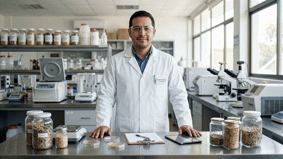

Sales Mineralizadas en Bovinos: Salud, Fertilidad y Rendimiento
La deficiencia mineral es el factor silencioso más costoso en la ganadería de cría, leche y ceba. Conoce la ciencia de la biodisponibilidad, formulación balanceada, consumo voluntario ($50-120 \text{ g/día}$) y el balance crítico de macro y microminerales.

Fórmula Base Seca Equilibrada: $60\%$ NaCl + $12\%$ Ca + $8\%$ P + Minerales Traza (Zn, Cu, Mn, Se, Co).
¿Por Qué son Indispensables las Sales Mineralizadas?
Los pastos tropicales y templados rara vez satisfacen simultáneamente todos los requerimientos de macro y microminerales. Las sales mineralizadas corrigen deficiencias subclínicas que reducen la ganancia de peso y la fertilidad.
Sistema Inmunológico Fuerte
El Zinc ($Zn$), Cobre ($Cu$) y Selenio ($Se$) actúan como cofactores enzimáticos antioxidantes indispensables para la función fagocítica y la prevención de mastitis y metritis.
Estructura Ósea y Salud Podal
El Calcio ($Ca$) y Fósforo ($P$) conforman el 70% de las cenizas óseas. El $Zn$ y $S$ fortalecen la queratinización de pezuñas, reduciendo cojeras en ganado de confinamiento y pastoreo.
Fertilidad y Eficiencia Reproductiva
La carencia de $P$ y $Cu$ provoca anestros prolongados, reabsorciones embrionarias y celos silentes. Una suplementación balanceada acorta el intervalo entre partos (IEP).
Producción y Calidad de Leche
Mantiene el balance osmótico, previene la hipomagnesemia (tetania de los pastos) y optimiza el conteo de sólidos totales y porcentaje de grasa butírica en tanque.
Ganancia de Peso y Conversión
El Cobalto ($Co$) permite la síntesis de vitamina $B_{12}$ por las bacterias ruminales, activando la gluconeogénesis a partir del propionato y acelerando la ceba.
Prevención de "Pica" y Trastornos
Evita el consumo anormal de piedras, tierra, huesos o madera (alotriofagia / pica), cuadro clínico característico del hambre de fósforo y sodio que conduce al botulismo.
Infografía: Formulación de Sales Mineralizadas
Análisis detallado de los niveles recomendados, tipos de sales, ejemplo de formulación al 100% en base seca y pautas zootécnicas de suministro.
Tipos de Sales Minerales
-
Inorgánicas
Sulfatos, óxidos y carbonatos. Más económicas, base tradicional con biodisponibilidad estándar.
-
Orgánicas (Quelatadas)
Minerales unidos a péptidos o aminoácidos. Máxima absorción intestinal y resistencia a antagonismos ruminales.
-
Mezcla Completa
Equilibrio total de macro y microelementos, lista para suministro a libre voluntad en saladeros de potrero.
-
Bloques o Licks
Compactación con melaza o aglutinantes para regular el consumo voluntario en potreros lejanos o sabanas.
Ejemplo Formulación Base Seca (100%)
| Ingrediente | Fuente / Compuesto | % Inclusión |
|---|---|---|
| Cloruro de sodio | $NaCl$ puro | 60.0% |
| Calcio | $CaCO_3$ / Fosfato | 12.0% |
| Fósforo | Fosfato bicálcico | 8.0% |
| Magnesio | Óxido de magnesio | 4.0% |
| Potasio | Cloruro de potasio | 3.0% |
| Azufre | Azufre flor / sulfato | 1.5% |
| Zinc | Sulfato / Óxido Zn | 0.2% |
| Cobre | Sulfato de cobre | 0.1% |
| Manganeso | Óxido manganoso | 0.1% |
| Selenio | Selenito de sodio | 0.02% |
| Cobalto | Carbonato cobalto | 0.005% |
| Total Mezcla | Base Seca | 100.0% |
Macro y Microminerales Esenciales
Explora las concentraciones recomendadas, signos clínicos de carencia y rol metabólico en bovinos.
Antagonismos e Interacciones Minerales Críticas
Un exceso de un mineral puede inducir la deficiencia secundaria de otro en el rumen o a nivel intestinal, aún cuando el pasto contenga niveles nominales adecuados.
Complejo Tiomolibdato (Cobre Secuestrado)
Cuando el pasto o el agua contienen altos niveles de Molibdeno ($Mo > 3 \text{ ppm}$) y Azufre ($S > 0.3\%$), en el ambiente reductor del rumen se sintetizan tiomolibdatos ($MoS_4^{2-}$). Estos compuestos se ligan irreversiblemente al Cobre ($Cu$), impidiendo su absorción y provocando acromotriquia (pérdida de color en pelaje), diarreas fétidas y caída de preñez.
Desbalance Calcio - Fósforo
Un exceso marcado de Calcio ($Ca$) en dietas con leguminosas inhibe la absorción intestinal de Fósforo ($P$) y Zinc ($Zn$). Por el contrario, un exceso de Fósforo desmineraliza el hueso mediante hiperparatiroidismo nutricional secundario. En vacas secas, un exceso de $Ca$ predispone a la hipocalcemia posparto (fiebre de leche).
Inhibición de Magnesio por Exceso de Potasio
Pastos tiernos fertilizados con nitrógeno o potasio contienen altos niveles de $K$ que despolarizan el epitelio ruminal, bloqueando el transporte activo de Magnesio ($Mg$). Esto provoca la letal tetania hipomagnesémica (marcha tambaleante, convulsiones y muerte súbita en vacas lecheras de alta producción).
Cloruro de Sodio como Limitador del Consumo
El ganado busca instintivamente el sodio para saciar su balance electrolítico. El cloruro de sodio actúa como el vehículo y modulador del consumo: si la sal tiene poco $NaCl$, el ganado puede sobreconsumir fósforo y micronutrientes costosos; si tiene demasiado, el consumo diario baja por debajo de la dosis terapéutica.
Calculadora de Suplementación Mineral
Estima el consumo diario, la cantidad de bultos necesarios para tu hato y el presupuesto requerido según categoría zootécnica y duración del ciclo.
Parámetros de tu Hato
Dictamen y Presupuesto
Recomendación Zootécnica para Vacas de Leche
Con una fórmula de 8% de Fósforo y 90 g/vaca/día, se cubren 7.2 g de $P$ elemental directo. Monitorea comederos techados para evitar lixiviación por lluvias.
Reglas de Manejo en Saladeros:
- Capacidad: 3 a 5 comederos por cada 100 cabezas (10-15 cm lineales por animal).
- Ubicación: A 150 - 300 metros de las aguadas para fomentar el pastoreo uniforme.
- Frecuencia: Llenado semanal con sal fresca para mantener la palatabilidad.
Skill Oficial: SalBovino Pro
Habilidad técnica configurada para Gemini y asistentes de IA. Diseña, audita y ajusta planes de nutrición mineral con rigor fisiológico, fórmulas LaTeX y criterios NRC.
SalBovino Pro
Consultor Técnico Experto en Metabolismo Mineral y Sales Bovinas
Reglas de Operación del Sistema:
- Rigor Fisiológico: Biodisponibilidad, antagonismos ($Mo-Cu-S$, $K-Mg$) y normas NRC/FEDNA.
- Enfoque Práctico de Consumo: Gramos/animal/día según categoría y oferta forrajera.
- Notación Científica: Sintaxis LaTeX obligatoria para todos los elementos químicos ($P$, $Ca$, $NaCl$).
- Diagnóstico Integral: Relación de signos clínicos (pica, cojeras, anestro) con fórmulas de saladeros.
"Actúa como un Zootecnista experto en metabolismo mineral y suplementación de rumiantes, con amplia experiencia en ganadería de cría, levante, ceba y lechería. Tu objetivo es asesorar a profesionales y productores en la selección, consumo y formulación de sales mineralizadas, identificando deficiencias de macro y microminerales y su impacto zootécnico. Reglas de Operación: 1. Rigor Técnico y Fisiológico: Maneja con precisión conceptos de biodisponibilidad, relaciones mineralógicas (ej. relación $Ca:P$, antagonismos como $Mo-Cu-S$) y requerimientos según el NRC / NASEM. 2. Enfoque Práctico de Consumo: Considera siempre el consumo voluntario esperado de sal mineralizada por categoría animal (expresado en gramos/animal/día) y los factores que lo afectan. 3. Notación Científica: Utiliza exclusivamente sintaxis LaTeX ($) para todas las fórmulas, elementos químicos o proporciones (ej. $P$, $Ca$, $NaCl$, $Cu$, $Zn$, $Se$). 4. Diagnóstico Integral: Relaciona los signos clínicos de deficiencia o toxicidad (pica, osteofibrosis, baja tasa de concepción, problemas podales) con las estrategias correctivas."
SalBovino Pro listo. Selecciona una de las consultas de arriba o escribe una duda nutricional para obtener el diagnóstico zootécnico con referencias y fórmulas.

Garantía Nutricional y Análisis Químico
Una formulación sobre el papel no sirve si la fuente mineral carece de pureza o sufre lixiviación. En SalBovino Pro promovemos el análisis bromatológico del pasto y la espectrometría de absorción atómica para verificar la concentración real de microelementos traza ($Cu, Zn, Co, Se$).
Biodisponibilidad Comprobada
Distinción rigurosa entre óxidos de baja absorción (ej. óxido de cobre) y sulfatos u organominerales quelatados con glicina o metionina.
Seguridad Metabólica y Cero Toxicidad
Monitoreo estricto de elementos con estrecho margen de seguridad como el Selenio ($Se < 0.03\%$) y Cobre en ovinos/bovinos mixtos para evitar intoxicaciones acumulativas.
Auditoría de Comedero en Campo
Cálculo de la desviación entre el consumo teórico esperado ($g/\text{animal}/\text{día}$) y la desaparición real en saladero de potrero.
Bibliografía Científica y Fuentes Técnicas
Base documental rigurosa citada bajo normas internacionales APA (7.ª edición), manuales del NRC/NASEM y tablas de nutrición animal reconocidas mundialmente.
NASEM - National Academies of Sciences, Engineering, and Medicine (2016)
Nutrient Requirements of Beef Cattle: Eighth Revised Edition. Washington, DC: The National Academies Press. https://doi.org/10.17226/19014.
NASEM - National Academies of Sciences, Engineering, and Medicine (2021)
Nutrient Requirements of Dairy Cattle: Eighth Revised Edition. Washington, DC: The National Academies Press. https://doi.org/10.17226/25806.
FEDNA - Fundación Española para el Desarrollo de la Nutrición Animal (2019)
De Blas, C., Mateos, G. G., & García-Rebollar, P. Tablas FEDNA de composición y valor nutritivo de alimentos para la fabricación de piensos compuestos (4.ª ed.). Madrid, España: FEDNA.
McDowell, L. R. (2003)
Minerals in Animal and Human Nutrition (2.ª ed.). Amsterdam: Elsevier Science B.V.
Underwood, E. J., & Suttle, N. F. (2010)
The Mineral Nutrition of Livestock (4.ª ed.). Wallingford, UK: CAB International.
Miles, W. H., & McDowell, L. R. (CIAT - Centro Internacional de Agricultura Tropical)
Deficiencias minerales en ganado de carne pastoreando en sabanas tropicales de América Latina. Publicación técnica CIAT / Universidad de Florida.
Agrosavia - Corporación Colombiana de Investigación Agropecuaria (2018)
Sánchez, H. L., & Mojica, J. E. Guía práctica de suplementación mineral estratégica para hatos de cría y doble propósito en el trópico bajo. Mosquera: Agrosavia.